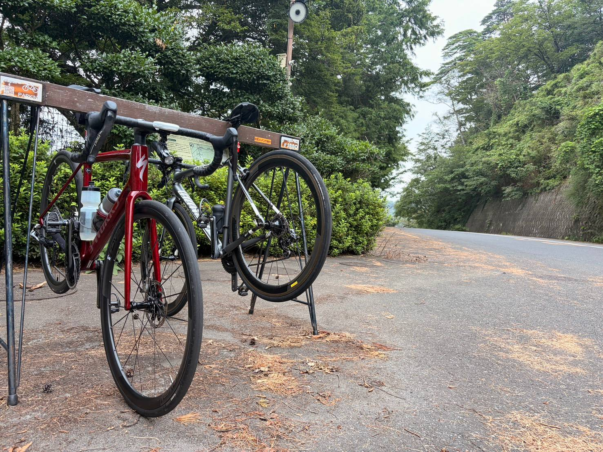
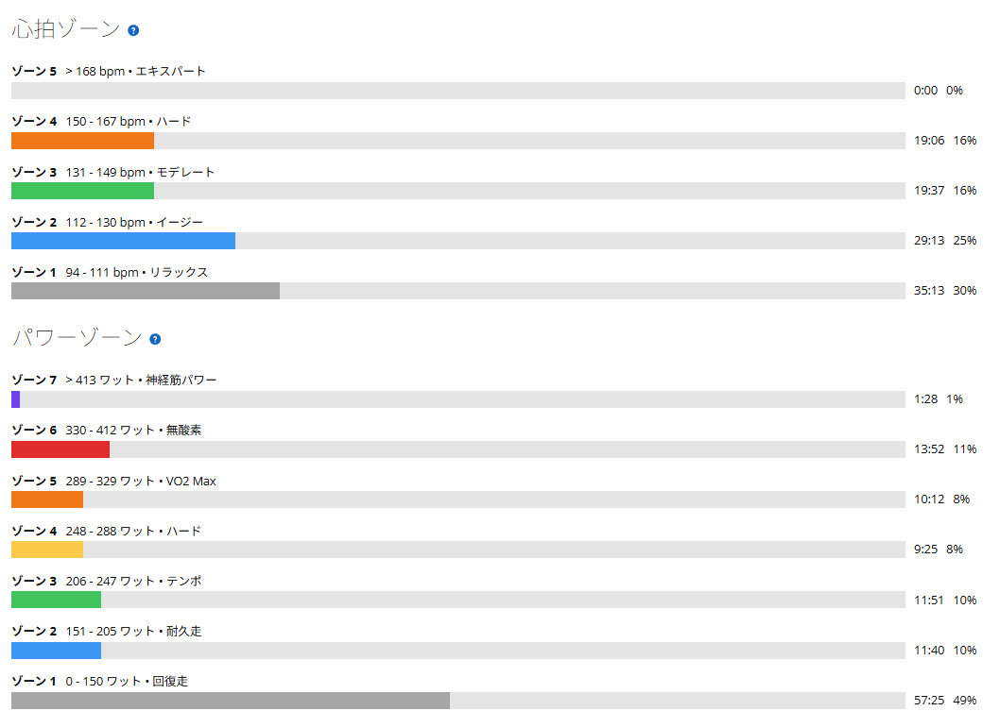
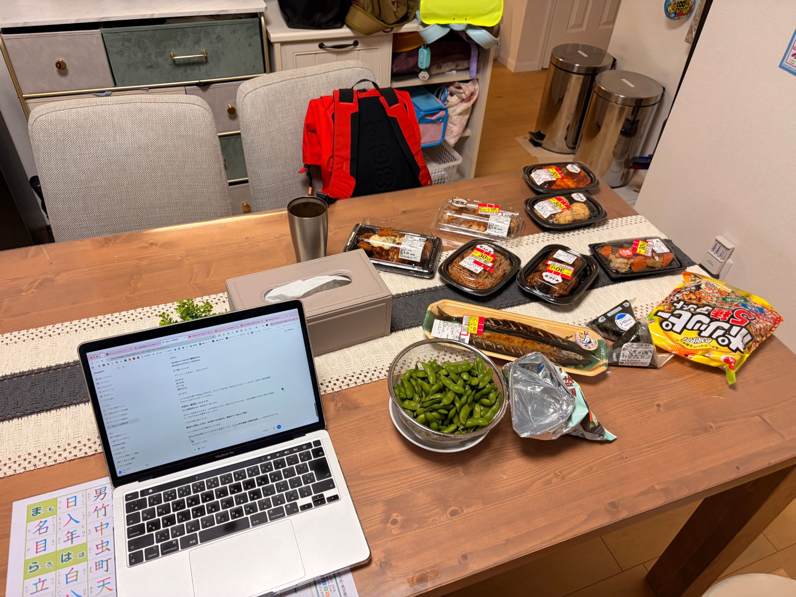

ゴルビーは4本。でも最後は頂上まで踏んで332W
今日はゴルビーの日。本来なら5分×5本だが、今日は時間の関係で4本まで。ただ「4本しかできなかった」ではなく「今日は4本で切り上げた」という方が正しい。脚が終わったわけではなく、単純にそのあとの予定があっただけである。
しかも4本目は5分で止めず、そのまま頂上まで踏み続けた。そしてそのあと友人と合流して、唐沢を2本追加している。最初は「ゴルビーの日」だったのに、終わってみればかなり濃い一日になった。

39.50km・NP240W・TSS145.6
- 全体39.50km / 1時間56分00秒 / 獲得843m / 運動負荷142
- 負荷平均155W / NP240W / IF0.872 / TSS145.6 / 最大585W / 20分最大220W
- 心拍・回転平均121bpm / 最大166bpm / 平均76rpm
- 環境平均26.3℃ / 最高29.0℃ / 推定発汗825ml
- 効果有酸素TE3.5 / 無酸素TE0.1
時間だけ見れば2時間弱。それでも獲得843m、TSS145.6。冒頭のグラフで高度の山が6つ並んでいるのが、ゴルビー4本と唐沢2本である。
1〜3本目は328W・328W・323W
- 1本目5分03秒 / 328W
- 2本目5分01秒 / 328W
- 3本目5分01秒 / 323W
1本目は最初から上げすぎず、狙っていた325〜335W付近にきれいに収まった。以前は1本目だけ高くなって後半に落ちることもあったが、最近は「最初から頑張りすぎない」という感覚が少しずつ分かってきた気がする。
2本目は1本目とほぼ同じ328W。こういうのが嬉しい。1本だけ高い数字を出すより、同じ出力を繰り返せる方が今は面白い。3本目は323Wで少し落ちたが、大きく崩れたわけではない。この辺りからきつくなるのはいつものことで、フォームを崩して無理やり踏むというより、淡々と一定の出力を作る。最近はそういう走り方を意識している。
4本目は5分で終わらず、頂上まで踏んで332W
- 4本目5分41秒 / 平均332W / NP339W
- 4本の振れ幅323W〜332Wで9W（前回8月8日の5本は11W）
4本目、5分を過ぎても頂上までもう少しだった。なのでそのまま踏んだ。結果は5分41秒・332W、NPは339W。5分を超えて40秒以上延長したのに、平均332W。ゴルビーの最後で、5分を超えても出力を落とさず登れた。今日いちばん印象に残ったのはここだった。
並べると328W、328W、323W、332W。振れ幅は9Wである。前回は5本すべてを11W差でまとめたので、本数は減っても揃い方はむしろ良くなっている。しかも最後だけ40秒長い。回数だけで見るより、内容はかなり良かったと思う。
友人と合流して、唐沢を2本追加
- 唐沢の追加1本は5分48秒 / 297W（もう1本は区間が長く、単独の数字としては出せない）
ゴルビーを終えたあと、友人と合流。そのまま唐沢を2本追加で登った。ゴルビー4本のあとに、さらに山を2本である。

ここはもう高出力を狙う必要がない。友人と走りながら、淡々と登りを重ねた。結果として今日の獲得標高は843m、TSSも145.6まで積み上がっている。4本で切り上げたのに、一日の総量としては十分すぎる。
ゾーン5以上で25分32秒
- パワーゾーンZ7 1分28秒 / Z6 13分52秒 / Z5 10分12秒 / Z4 9分25秒
- 心拍ゾーンZ4 19分06秒 / Z5は0分00秒（最大166bpm）

ゾーン5以上だけで25分32秒。ゴルビーだけでなく、そのあとの唐沢も含めてかなり高い領域に長く入っている。一方で心拍はゾーン4が19分06秒で、ゾーン5は0分。最大心拍も166bpmだった。
つまり追い込んではいるが、完全に限界まで壊れる走りではない。高い出力を繰り返しながら、ある程度コントロールして終えられた。この日の内容としては、そこが一番良かったのかもしれない。
夜は友人宅で、値引きシールだらけの宴会
今日は友人宅に泊まり。夜はスーパーの総菜を並べて、酒も飲む。焼き魚、肉系のおかず、枝豆、おにぎり、その他いろいろ。テーブルいっぱいである。

見た目だけならかなり豪華なのだが、よく見ると値引きシールだらけ。まるで金のない学生みたいな夕食だった。朝からゴルビーをやって、唐沢を追加で登って、夜は友人宅で総菜を並べて酒を飲む。こういう日も悪くない。
今日やってみて思ったこと
今日はゴルビー5本をやる予定だった。でも実際は4本。それでも内容にはかなり満足している。328W、328W、323W、332W。最後は5分41秒まで延長。そのあと友人と唐沢を2本。数字だけ見ればTSS145.6で、かなりしっかり走った日になった。
でも今日いちばん印象に残ったのは、「4本しかできなかった」ではなく「4本をきれいにまとめて、最後は頂上まで行けた」ということだった。そしてそのあとも、友人と普通に走れた。練習して、友人と走って、夜は飲む。なんだかんだで、かなり良い一日だった。
次に見るポイント
- 入り方1本目を325〜330Wで入る形を次も再現できるか
- 揃い方5本に戻したとき、今日の9W差をどこまで保てるか
- 延長最後の1本を5分超まで延ばしても出力を落とさずにいられるか
- 追加分ゴルビー後に山を足しても、翌日に残しすぎないか